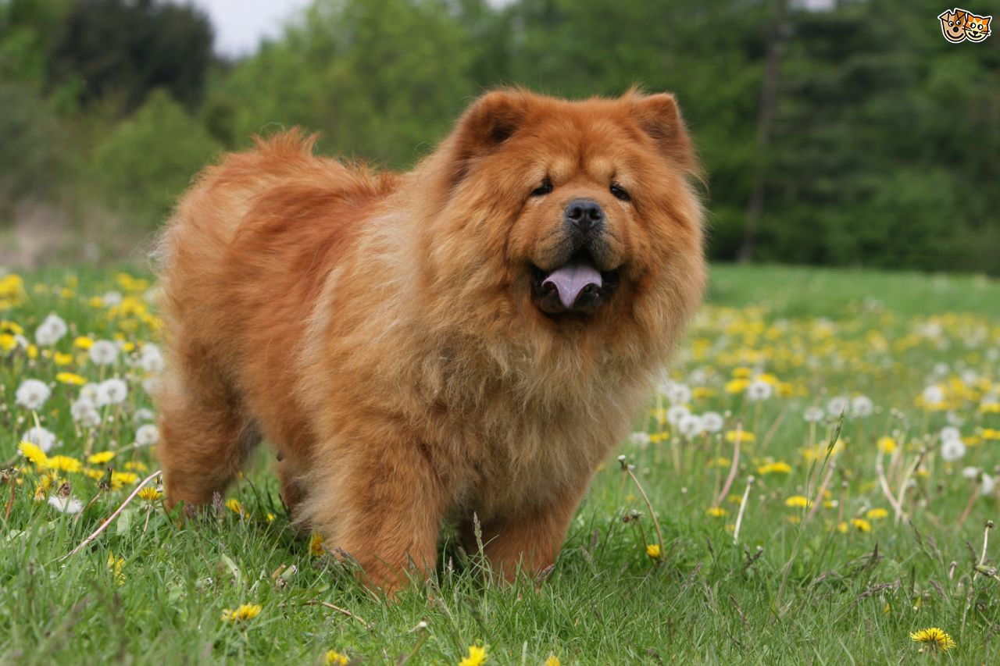
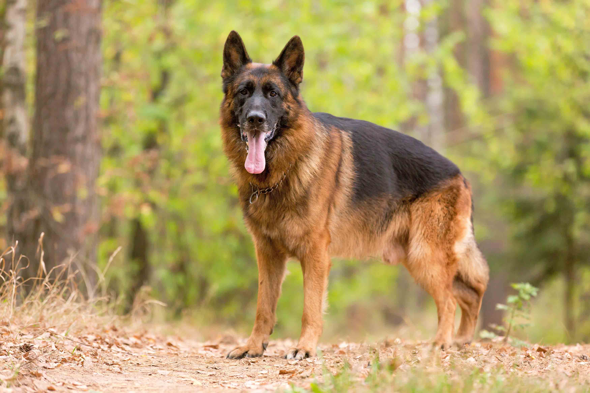

Tips 4 Finding The One (or many)
New Family Owners
For families that are new to dog ownership and are looking for a safe breed, there are a few key things to think about in order to guarantee a happy and satisfying connection with their new dog friend. Above all, it's critical to do your homework and choose a breed that is well-known for being docile and friendly, particularly around little children. Breeds that are well-suited for families and have amiable dispositions include Labrador Retrievers, Golden Retrievers, and Beagles. Size and energy level should also be considered, as smaller breeds or those requiring less exercise might be better suited for homes with less room or time for regular walks and play. Additionally helpful in determining compatibility and guaranteeing a suitable fit for the family's lifestyle and tastes are temperament testing and in-person meetings with prospective breeds. Ultimately, raising a well-mannered and content family dog requires early socialization, obedience training, and the provision of a secure and interesting environment.
Single or Protective Owners
When it comes to single people looking for more protection from their dog or who want a breed that is recognized for having strong guarding instincts, thoughtful thought and appropriate ownership are essential. A breed with a tendency toward protective behavior, like German Shepherds, Rottweilers, or Doberman Pinschers, should be carefully researched and chosen. However, it's also important to understand that these instincts must be properly channeled through training and socialization. To create a stable and well-balanced companion, training should emphasize obedience, impulse control, and positive reinforcement methods. It is also important for single dog owners to put in time and effort into making sure their companion dog has enough exercise, mental stimulation, and social engagement in order to avoid behaviors connected to boredom and protect their relationship. A strong and mutually beneficial relationship between the single owner and their protective or aggressive breed can be established by understanding and meeting the demands of the breed while placing a high value on appropriate ownership practices.
